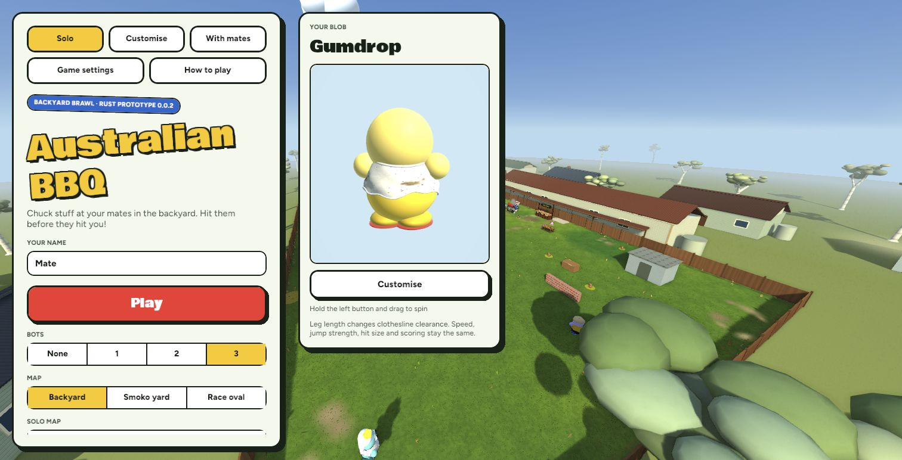
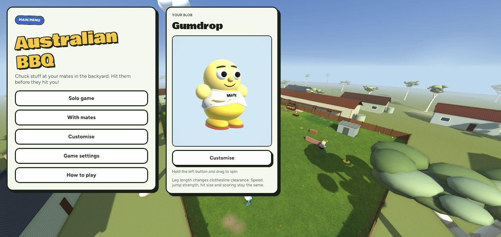
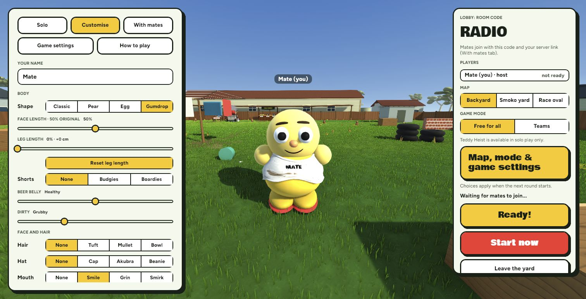
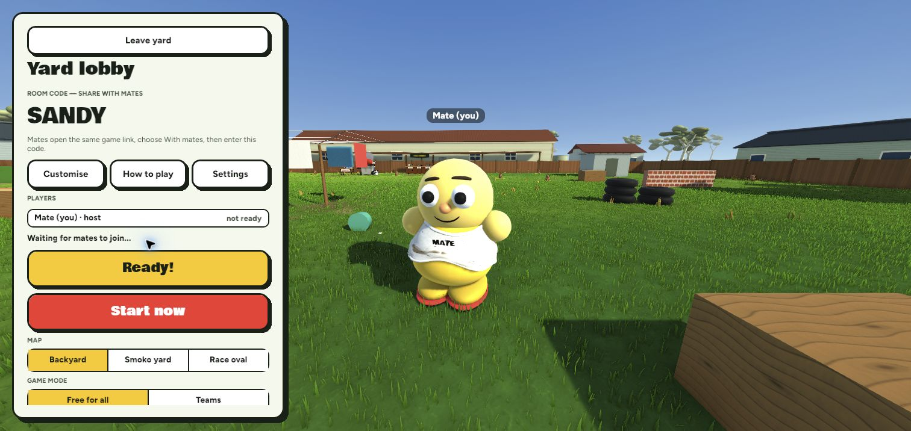
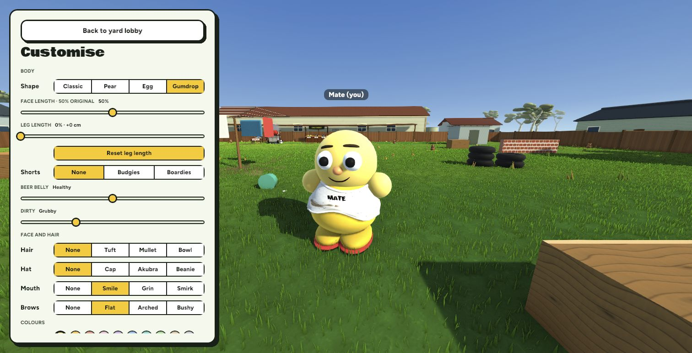
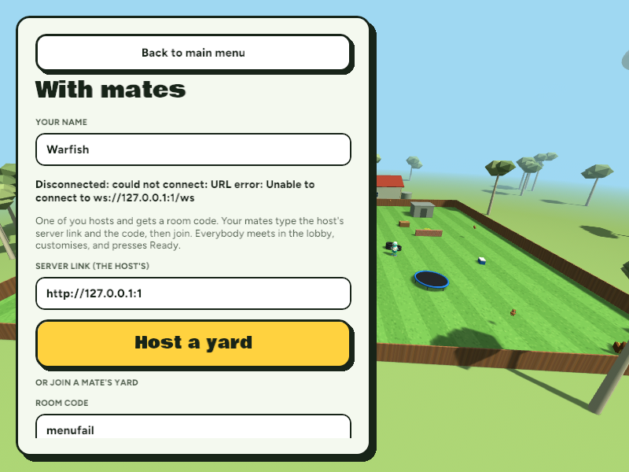
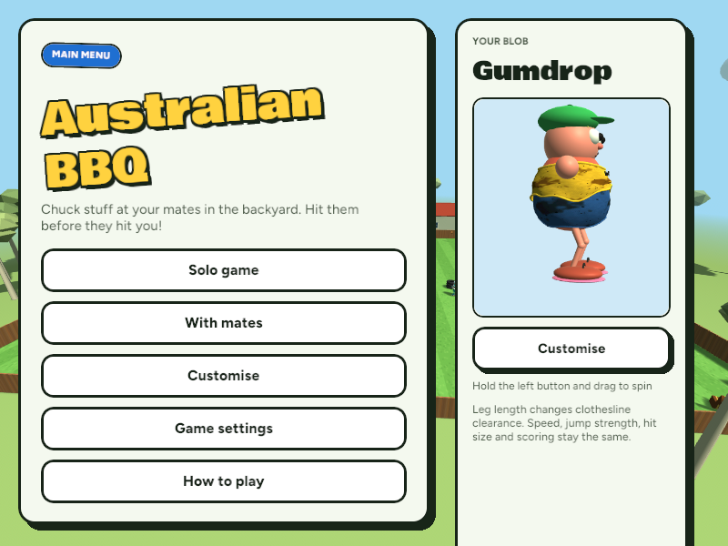

Main menu → With mates → Host a yard → Yard lobby. Back returns to the parent page; leaving a room returns to With mates. A failed connection keeps its error visible rather than bouncing to Solo.
657 tests passed. Desktop and browser builds passed. Native host/guest joined and started a round; browser Host, Start, round return and Leave verified. Backup created first. No commit or push. These are actual game captures, not concepts.
Verification, limitations and recovery details






